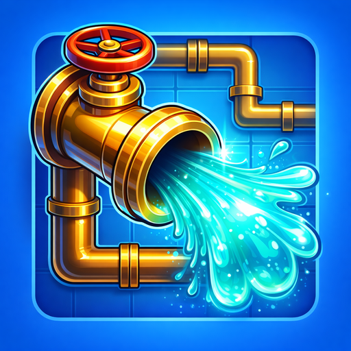
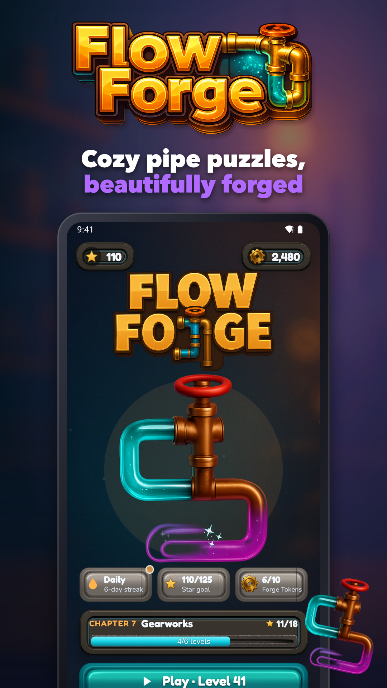
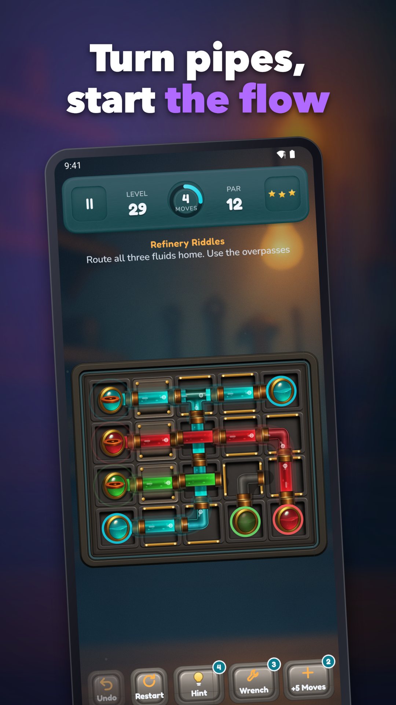
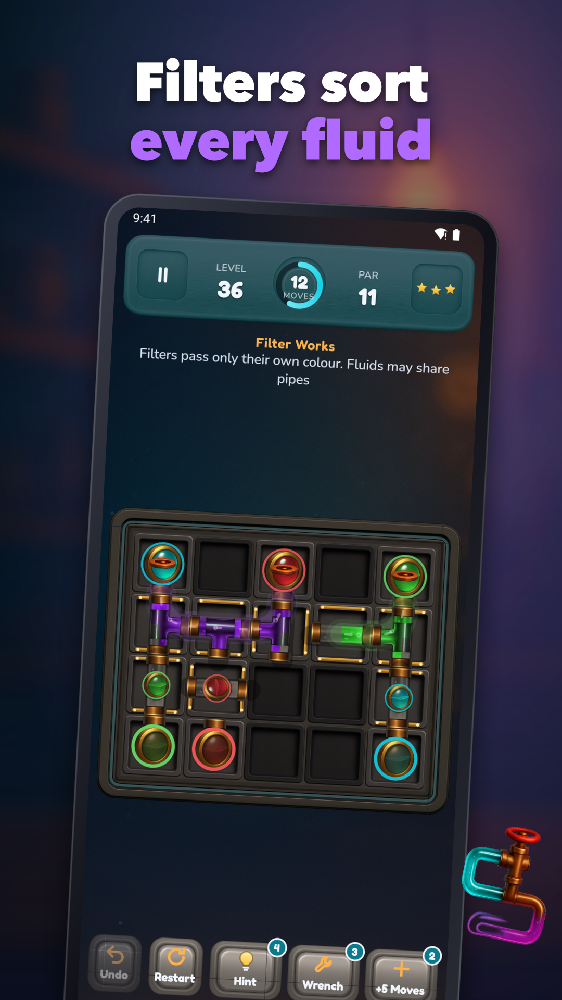
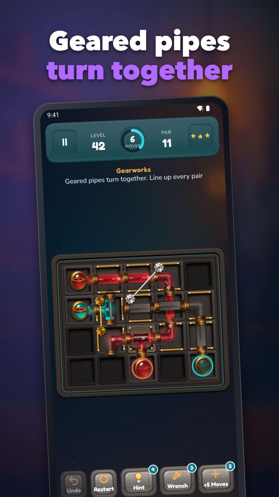
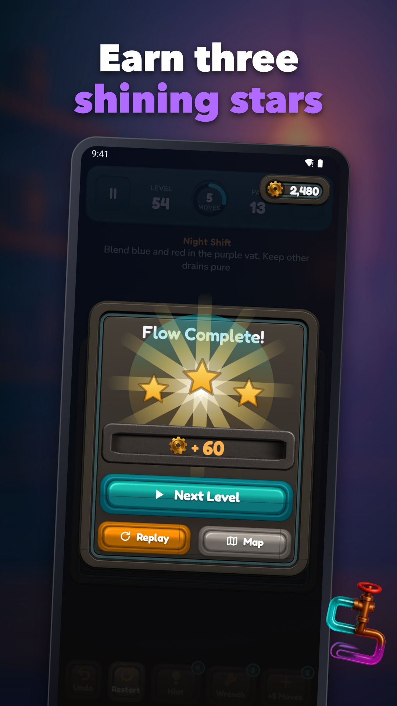
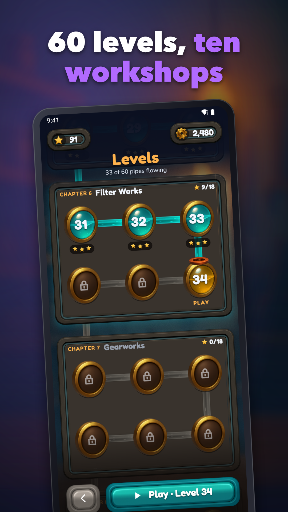

Pipe Puzzle Game
Rotate pipes, filters and mixers to solve 60 offline logic puzzles.






Logic puzzles you can take anywhere, even offline. Rotate tiles to connect sources to every drain through a factory of clever pipe parts. With 60 handcrafted levels across 10 themed chapters, you’ll flex reasoning, spot patterns, and plan routes without needing a connection.
What you’ll play
• Rotate straight and elbow pipes to build clean paths
• Feed every drain mouth while avoiding decoy pipes
• Work around bolted tiles that can’t be turned
• Split flow with tees to reach multiple drains
• Guide two fluids, then three fluids as complexity ramps up
• Cross lines using the + overpass without mixing
• Purify streams through colour filters before they meet targets
• Engage geared pipes that rotate together for brain-twisting moves
• Fill the mixer vat to create purple for its special drain
Progression built for mastery
• 60 levels across 10 chapters:
- Workshop Basics (1–6)
- Factory Floor (7–12)
- Pressure Plant (13–18)
- Color Lab (19–24)
- Refinery Riddles (25–30)
- Filter Works (31–36)
- Gearworks (37–42)
- Blend Lab (43–48)
- Night Shift (49–54)
- Grand Refinery (55–60)
• Difficulty choices let you pick easy, medium, or expert boards where offered
• Earn stars per level and collect coins as you improve
• Daily puzzle keeps your streak alive with a fresh challenge
Controls and game feel
• Touch-first: tap to rotate, quick undo and restart at any time
• Sound and haptics settings to tune your play vibe
Helpful systems when you need them
• Hints show a nudge without giving away the whole board
• Boosts and power-ups like freeze help unlock tricky layouts
• Optional rewarded ads only when you choose—for a hint or free currency
Play your way
• Fully offline—no account, no login, and progress is stored on your device
• Clean sessions in 1–5 minute levels, great for quick breaks or focused runs
If you love a thoughtful pipe puzzle that deepens over time, start connecting, filtering and mixing your way through the refinery today.
Support: jeets98e@gmail.com